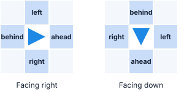
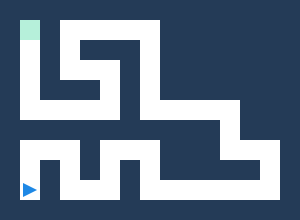
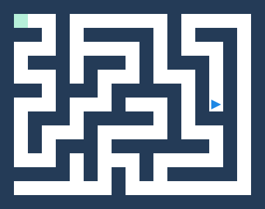
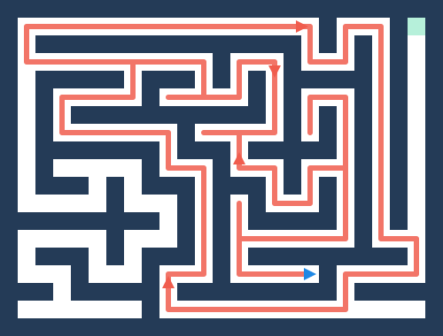
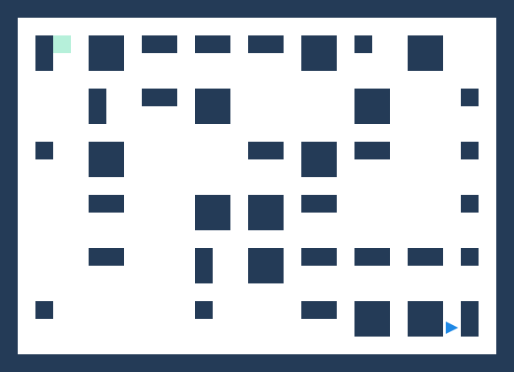
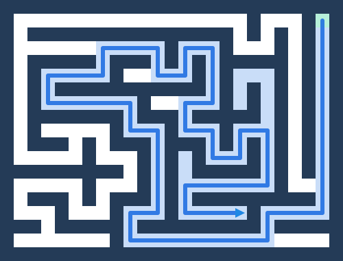

The maze
Guide the triangle to the goal
Starting Python. The first load takes a few seconds.
Your program
Python code Code blocks
Code blocks could not be loaded. Switch to Python to carry on.
Output
Goal and controls
Write a Python program that guides the blue triangle from its starting square to the green goal square without walking into walls. The triangle starts facing right, and every run begins again from the start.
- Run program runs the code in the Python editor.
- Stop halts the triangle where it is. Every run starts again from the beginning.
- The speed slider changes animation speed.
- Load sample loads a right-hand-wall solver into the code box.
- The Maze menu changes difficulty, and Generate new maze builds a fresh layout of the one you are on, so a program that only works on a single maze is easy to spot.
- Challenge mode opens at the bottom of the page after your first goal, and tests your program on 150 new mazes.
Action functions
These functions change the triangle:
move(): move one square in the direction the triangle is facing. It raises aRuntimeErrorif a wall is ahead.turn_left(): turn 90 degrees left without moving.turn_right(): turn 90 degrees right without moving.
Checking functions
These look at the maze without moving the triangle, and
each one answers True or False.
Directions are relative to the way it is currently
facing.
path_ahead(): is the square directly ahead open?path_left(): is the square to the triangle's left open?path_right(): is the square to the triangle's right open?path_behind(): is the square directly behind open?at_goal(): is the triangle on the green goal square?

Where am I?
One function reports something the triangle cannot see:
position(): the square the triangle is on, as a(row, column)pair counting from zero at the top left. Unlike the checks above it does not answerTrueorFalse.
Storing every position() you have visited is
how a program can tell that it has been somewhere before,
which is exactly what wall following cannot do.
Useful Python patterns
Use if to choose one action. A colon starts each
block, and its contents are indented by four spaces:
if path_ahead():
move()
elif path_right():
turn_right()
else:
turn_left()Use while to repeat choices until the goal is
reached. The ... below is a placeholder, so
replace it with your own indented decision:
while not at_goal():
# Check the paths and choose an action here
...You can also name a reusable sequence by defining your own function:
def go_forward_until_wall():
while path_ahead():
move()
go_forward_until_wall()For how each difficulty is solved, open the Harder mazes tab.
Output and common errors
print() messages and Python errors appear in
the Output panel. Read the final line first; it usually
identifies the problem.
SyntaxError: check exact spelling, matching parentheses and a colon afterif,elif,else,whileanddeflines.IndentationError: use the same indentation throughout a block, normally four spaces. After a line ending in a colon, Enter indents the next line for you. Tab indents every selected line and Shift+Tab unindents them.RuntimeError: Wall ahead: call a path question beforemove().StepLimitError: a loop is repeating without enough progress. Make sure a branch moves or turns and that the loop can eventually stop. On Hard and Expert mazes it can also mean a working strategy is going round and round a loop in the maze.
When debugging, start with one or two commands, run them, then add one decision at a time.
Each difficulty adds one idea
A program that solves one difficulty can fail the next, because each adds something new to the maze. This tab goes through them in order. After your first goal, challenge mode tests a program on 25 mazes of each.
Easy: one winding corridor
An Easy maze turns but never branches, so the program only has to keep going forward and turn at corners:
while not at_goal():
if path_ahead():
move()
elif path_right():
turn_right()
move()
else:
turn_left()elif means “otherwise, if”. Python checks
the branches in order and runs only the first one that
fits.

Medium: junctions and dead ends
At a junction, “keep going forward” guesses, and it can walk into a dead end and stay there. Swap the first two branches so the right path comes first:
while not at_goal():
if path_right():
turn_right()
move()
elif path_ahead():
move()
else:
turn_left()The same three rules in a different order make a different strategy. The triangle keeps its right hand on the wall, tries every branch it meets and walks back out of dead ends. On Easy and Medium mazes it always reaches the goal, because there is exactly one route between any two squares.

Hard and Expert: loops
Hard and Expert mazes contain loops, so some walls are islands that never touch the goal. A wall follower that starts beside one goes round it forever. Every lap looks the same, so a rule that only checks the squares next to the triangle cannot tell it has been there before.
The picture is Hard maze 15 from challenge mode. The right-hand rule follows the red route, passes one wall away from the goal, and arrives back where it started.

Plaza: no wall to follow
A Plaza is an open hall of separate pillars, with the start and goal away from the outside wall. Keeping a hand on a pillar only leads round that pillar, so no wall follower solves a single one.

Give the triangle a memory
What a wall follower lacks is memory.
position() gives the square the triangle is
on, so a program can keep every square it has visited in
a set and tell new ground from ground it has
covered:
visited = set()
while not at_goal():
visited.add(position())
...Then prefer a direction whose square is not in
visited, and keep a list of the moves made so
they can be retraced out of a dead end.
position() does not say which way the
triangle faces, so keep that in a variable as well and
change it at every turn.
The picture shows a program like this on the same maze. It explored the shaded squares, backed out of the dead ends and found the goal. This approach solves every difficulty, Plaza and Marathon included.

Further challenges
- Prefer left: swap the
path_right()branch for apath_left()one, and compare. - Walk less: challenge mode compares each
solved maze with its shortest route, shown as par.
1.0×par means no wasted moves. - Name repeated behaviour: define a
function such as
def turn_around():and call it where needed.